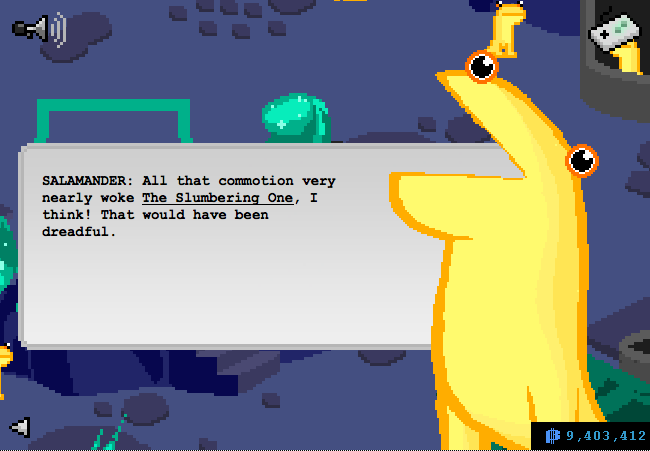
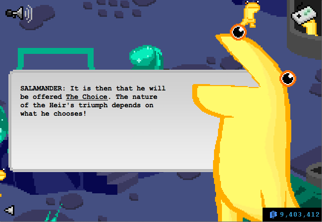

[In between those pictures is the salamander saying that only the Heir can wake the Slumbering One but I didn’t screencap that]
We’re finally close to the Denizen! I am so so so excited. It’ll probably be like another thousand pages before we get to see it, though, at the rate this story moves.